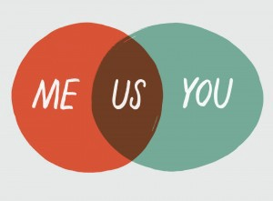

How to Win an Argument
Become more persuasive in 9 minutes or less.
November 3, 2015
William Ury took a seat, eager to get started. Across from him sat Hugo Chavez, president of Venezuela. Chavez had kept Ury waiting the last few hours, testing his patience, and Ury dove right into his recommendations. Chavez was facing demands for his resignation, and had called Ury (a negotiations expert from the U.S.) in for help. After hearing the initial suggestion however, Chavez was not impressed. He stood up in anger and yelled at Ury, who clearly didn't know what he was talking about and had no idea how to run a country. Instead of defending himself, Ury sat back and listened to what Chavez had to say. After half an hour of this, Chavez ran out of steam and began to calm down. His expression softened, and he asked Ury for advice. The next suggestion he accepted on the spot.
Arguments are much more complicated than deciding who is right or wrong, and this is mostly due to human emotion. Emotions have played an important role in human history; they allow us to bond with each other, find social support, and react quickly to threats. On the other hand, emotions can cloud our judgment and cause us to make choices that are not in our best interests. When tension builds and egos get involved, having the right answer won't help you persuade anyone. Even if you address each of their points and explain the reasoning, they still walk away with the same beliefs, as confident in their position as you are in yours. Why does this happen?
A group of researchers from UC Berkeley, Harvard, and University of Pittsburgh brought pre-teens and teens in for brain scans (MRI) to measure the immediate effects of criticism from parents. They found that upon hearing criticism, the subjects' brain activity changed in a few places. The region responsible for negative emotions lit up, as expected. The interesting part is that the regions of the brain responsible for perspective taking and emotional control actually had a drop in activity. So their ability to remain calm, rational, and to understand the validity of another person's view all dropped. [1]
This is your brain's equivalent of covering your ears and yelling so you can't hear something you don't agree with. While criticism and argument are different things, contradicting someone is still a form of criticism if not done tactfully.
For those interested, another study was done during the 2004 U.S. presidential election, with the supporters of both George W. Bush and John Kerry, and found similar results, published in The Political Brain. [2]
So what does all of this mean? Imagine you're having a conversation with a friend or coworker, and he says something you know to be wrong. You don't want him to base any decisions on misinformation, so you correct his error and explain your reasoning. The problem is, no one wants to be wrong.
Whether by embarrassment, guilt, or something else, his brain feels emotionally threatened. Your friend's ego is at risk of damage and his brain needs to protect it, and begins to block out new information, looking for ways to deflect it or even retaliate. If he had any doubts about his position before, those doubts are suppressed. The craziest part is that he doesn't even notice himself feeling different; this reaction happens at a subconscious level. At this point, some people may try to discredit your beliefs, talk over you, or even dish out insults and use all sorts of logical fallacies. The whole conversation becomes unproductive.
The Solution
So how do we win an argument? The better question is, what constitutes “winning” to you? Do you want to persuade them to your point of view, or do you want to make them feel inferior? Is the argument even worth having? The difference here will determine the type of interaction you're about to have, so it's important you understand your own intentions.
Take a moment and imagine two gorillas crossing paths in the jungle. Let's call them Bruce and Horatio. They begin beating their chests and screeching at each other, getting louder and more aggressive. Finally, Bruce backs down, defeated and indignant. This is what I picture when I see two people in a heated argument. Bruce may have had an insightful point about the moral implications of corporate money in American politics, but Horatio wasn't having any of it. They both walked away with their minds unchanged, and neither learned anything from the interaction.
Looking at arguments in this context, it seems rather primal to let our emotions take control. While we may consider ourselves somehow better than the rest of the animal kingdom, we are driven by the same engine. We still act like animals at times, but a key part of the human brain that separates us is a more advanced frontal lobe (sometimes pluralized to “lobes,” separated into left and right), which is a relatively recent development in terms of evolution. According to the National Institute of Neurological Disorders & Stroke (NINDS):
“When you plan a schedule, imagine the future, or use reasoned arguments, these two lobes do much of the work. One of the ways the frontal lobes seem to do these things is by acting as short-term storage sites, allowing one idea to be kept in mind while other ideas are considered.”
As discussed in the first section, emotions have been incredibly useful over the course of human history. But when we let our negative emotions and ego dominate a conversation, we're letting our animal brains take control. This means we ignore the most advanced region of our brain and revert to older instincts. We stop thinking about future consequences, such as damaging a relationship or not reaching a solution to the problem at hand. For the sake of simplicity, we can call this section our Reactive Brain. Meanwhile, the intelligent, thoughtful, considerate section (the parts we should be using more) we can call our Proactive Brain.
It should be clear by now which Brain you should be using if you want to have productive conversations. You can even direct the tone of a disagreement and avoid getting your Reactive Brains involved. As a rule of thumb:
If you find yourself arguing, you've already lost.
To be more precise, your discussion has escalated into something a bit less relaxed. You won't be persuading anyone at this point – at least not until things settle down. The trick is to see things from their perspective and change their mind without making them feel attacked. This involves identifying a disagreement before it becomes an argument, understanding their thought process, and explaining yours in a way that accounts for their beliefs. How do you do this though? The Internet loves numbered lists, so let's break it up. Here are 3 major steps to help you get your point across (and actually get them to listen to you):
1. Identify the Core Issue
- Clarify – Many arguments quickly reach a point where both sides are arguing about entirely different things. Pause and make sure everyone knows which issue you're trying to reach an agreement on. Sometimes it comes down to how you define the words you use, so make sure everyone agrees on the definitions. Take the abortion debate: much of the argument boils down to what you define as a human life. Is it human at conception? The second trimester? Birth? Figuring out where you stand will eliminate a lot of circular arguments.
- Focus – Once you've made the central issue clear, stay aware of it through the discussion. Things can get derailed rather quickly, especially in larger groups. Take a moment to breathe when you find yourself feeling defensive. Pause and remember what you want to accomplish. A helpful approach is to remember you're on the same team: you're working together to to get some perspective and come to a conclusion you agree on.
In one sentence: Focus on the problem, not the person.
2. Listen with the intent to fully understand them
Few social skills are more underrated than listening – not merely staying silent when someone is talking, but actually listening. This topic could fill a book, but here are some essentials.
- Be curious – listen because you want to understand. In the words of the legendary Bill Nye: “Everyone you know knows something you don't.” So pause and get curious. Approach every conversation with the question “what can I learn from this?” and start asking questions about what they say.
- Pay attention – Typically when someone talks to us, we tag onto one part of what they say and start forming our response before they've even finished. However, when we're waiting for our turn to speak, we stop listening.
- Paraphrase – Let them know you're listening by showing you understand what they meant. Your goal should be to understand their perspective so well that you can phrase it back to them better than they can say it themselves. We respect people who understand us, so we're more willing to listen to someone who does.
A curious mindset also means restricting some negative behavior:
- You should never directly disagree. Use some tact. This doesn't mean you should just agree with everything they say, but phrase your disagreement politely, with the knowledge that they've been exposed to different ideas than you. If someone acts like they know more than you, after a point you usually just stop arguing (regardless of whether they're right ) because it's not worth the effort to deal with them.
- You have to be open to being wrong. Having an open mind will show in your tone of voice and style of conversation. People will take your opinions more seriously if they can see you take theirs seriously. If it turns out you're wrong, congratulations! You learned something today. Admit it quickly and without taking it personally. To admit with confidence that you made an error shows you know how to learn. It also means two things are more important than your ego: the search for the best answer, and your relationship with the other person. [4]
- Be Kind. Let them save face. This is especially important if your argument has an audience. Admitting you're wrong is rarely a fun thing to do, so find ways to give them an “out.” In other words, make it easy for them to change their position without looking bad in the process. This could mean validating one or more of their beliefs, or pointing out a misunderstanding or miscommunication between you.
In one sentence: Listen and understand – you can't change a mind if you don't understand how it thinks.
3. Present your point – properly
- Find Commonplaces – Before you present any kind of information, you need to figure out how it appeals to the other person's values or beliefs. A recent political study done at Stanford found that “the most effective arguments are ones in which you find a new way to connect a political position to your target audience's moral values,” as opposed to using your own moral values as reasoning. [7]
- Recovery – How do you save yourself when the argument takes a turn? Find a point where you agree with them and let them know. Establishing common ground is an easy way to defuse tensions before things get hostile. The person will also warm up to your opinions once they see that you think logically (that is, that you think like they do). There's no rule stating you have to disagree on all topics just because you disagree on one.
In one sentence: Explain your side in terms of what it means to them, not just to you.
What did we learn today? (TL;DR)
Admittedly, the article's title may be somewhat misleading. This isn't about “winning” an argument, because that would suggest an argument should be a battle. This is about redefining what an argument means to you. Effective persuasion means that getting someone to understand your view (and to act accordingly) should be more important than coming out as the “winner.” This means letting go of the animalistic “me vs. them” mentality. If your goal is to persuade, learn to stop arguing.